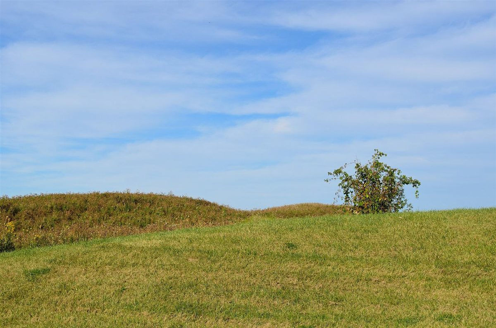
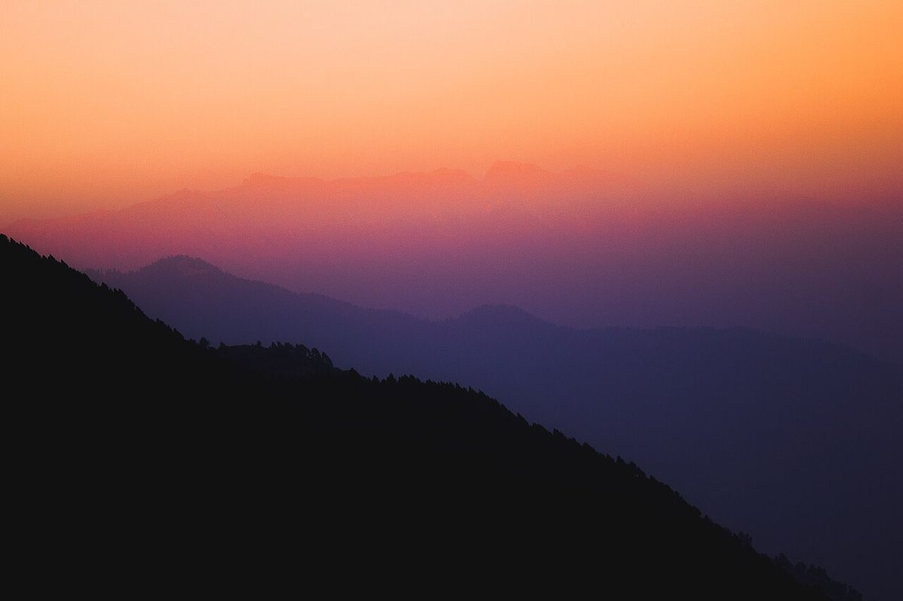

制作側の連想
「NOMAD」から、道しるべを思った。
「ノマド」は、決まった場所にとどまらず移り歩く人を指す言葉です。店名の由来は分かりません。制作側はこの言葉から、山道の分かれ目に立つ道しるべ(標柱)を連想し、サイト全体を矢印形の標識板が並ぶ一本の道のように作りました。嬬恋村は高原の村として知られているそうですが、お店との関係は分かりません。これは制作側の連想で、お店の理念・由来とは無関係です。
道ばたの景色(イメージ)
峠をいくつか越えるつもりで。
写真は嬬恋村の風景ではありません。旅の道すじのイメージで選んだ、国外・撮影地不明のフリー素材です。
- 朝

国外のイメージ(ドイツ) - 昼

国外のイメージ(欧州) - 霧

国外のイメージ(米国) - 夕

国外のイメージ(パキスタン)

石をひとつ積む
確認できているのは、ふたつだけ。
- 所在地は群馬県吾妻郡嬬恋村西窪44-1(〒377-1525)
- Instagramのアカウントは @nomadcoffee2024
それ以外の営業時間・定休日・メニュー・価格・ご予約・駐車場は、準備中です。分かったことから、石を積むように足していきます。
ご案内
お店のこと(確認できたものだけ)
| 所在地 | 〒377-1525 群馬県吾妻郡嬬恋村西窪44-1 |
|---|---|
| 電話 | なし |
| 営業時間 | 準備中 |
| 定休日 | 準備中 |
| ご予約 | 準備中 |
| 駐車場 | 準備中 |
| SNS | Instagram @nomadcoffee2024 |